| Previous | Table of Contents | Next |
A derivation of the expressions for regression parameters now follows.
Derivation 14.1 The error in the ith observation is
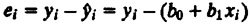
For a sample of n observations, the mean error is
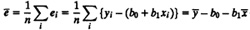
Setting the mean error to zero, we obtain
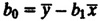
Substituting b0 in the error expression, we get
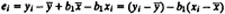
The sum of squared errors is
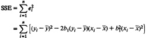
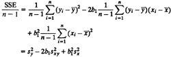
The value of b1, which gives the minimum SSE, can be obtained by differentiating this equation with respect to b1 and equating the result to zero:
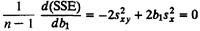
That is,
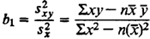
This is Equation (14.1) presented earlier.
The purpose of a model is to be able to predict the response with minimum variability. Without a regression model, one can use the mean response as the predicted value for all values of the predictor variables. The errors in this case would be larger than those with the regression model. In fact, in this case, the error variance would be equal to the variance of the response, since
and

The SSE without regression would be
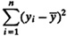
This quantity is called the total sum of squares (SST). Although it is different from the variance of y (since we have not divided by n –1), it is a measure of y’s variability and is called the variation of y.
The SST can be computed as follows:
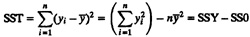
where SSY is the sum of squares of y (or ςy2) and SS0 is the sum of squares of  and is equal to
and is equal to  . The difference between SST and SSE is the sum of squares explained by the regression. It is called SSR:
. The difference between SST and SSE is the sum of squares explained by the regression. It is called SSR:
SSR = SST – SSE
or
SST = SSR + SSE
Thus, the total variation SST can be divided into two parts. The SSE indicates the variation that was not explained by the regression, while SSR indicates the variation that was explained by the regression. The fraction of the variation that is explained determines the goodness of the regression and is called the coefficient of determination, R2:
Coefficient of determination = R2 =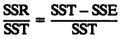
The goodness of a regression is measured by R2. The higher the value of R2, the better the regression. If the regression model is perfect in the sense that all observed values are equal to those predicted by the model, that is, all errors are zero, SSE is zero and the coefficient of determination is 1. On the other hand, if the regression model is so bad that it does not reduce the error variance at all, SSE is equal to SST and the coefficient of determination is zero.
The coefficient of determination is denoted by R2 because it is also the square of the sample correlation Rxy between the two variables:
Sample correlation(x, y) = Rxy = 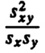
Coefficient of determination = {correlation coefficient(x, y)}2
In computing R2, it is helpful to compute SSE using the following shortcut formula:
SSE = ςy2 – b0ςy – b1ςxy
Example 14.2 For the disk I/O-CPU time data of Example 14.1 the coefficient of determination can be computed as follows:
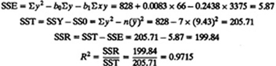
Thus, the regression explains 97% of CPU time’s variation.
To compute the variance of errors, we need to divide the sum of squared errors (SSE) by its degrees of freedom, which are n – 2, since errors are obtained after calculating two regression parameters from the data. Thus, the variance estimate is
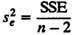
The quantity SSE/(n–2) is called the mean squared error (MSE). The standard deviation of errors is simply a square root of the MSE.
At this point it is interesting to point out the degrees of freedom for other sums of squares as well. The SSY has n degrees of freedom since it is obtained from n independent observations without estimating any parameters. The SS0 has just one degree of freedom since it can be computed simply from  . The SST has n–1 degrees of freedom since one parameter
. The SST has n–1 degrees of freedom since one parameter  must be calculated from the data before SST can be computed. The SSR, which is the difference between SST and SSE, has the remaining one degree of freedom. Thus, various sums and their associated degrees of freedom are as follows:
must be calculated from the data before SST can be computed. The SSR, which is the difference between SST and SSE, has the remaining one degree of freedom. Thus, various sums and their associated degrees of freedom are as follows:
SST = SSY – SS0 = SSR + SSE
n – 1 = n – 1 = 1 + (n – 2)
Notice that the degrees of freedom add just the way the sums of squares do. This is an important property that we will use frequently in developing other statistical models.
Example 14.3 For the disk I/O-CPU data of Example 14.1, various sums of squares have already been computed in Example 14.2 The degrees of freedoms of the sums are
Sums of squares: SST = SSY – SSO=SSR + SSE 205.71 = 828 – 622.29 = 199.84 + 5.87 Degrees of freedom: 6 = 7 – 1 = 1 + 5 The mean squared error is
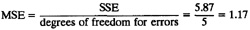
The standard deviation of errors is
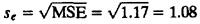
The regression coefficients b0 and b1 are estimates from a single sample of size n. Using another sample, the estimates may be different. Thus, the coefficients are random in the same manner as the sample mean or any other parameter computed from a sample. Using a single sample, only probabilistic statements can be made about true parameters β0 and β1 of the population. That is, the true model is
y = β0 + β1x
and the computed coefficients b0 and b1 are “statistics” corresponding to the parameters β0 and β1, respectively.
The values of b0 and b1 obtained from Equations (14.2) and (14.1) are their mean values. Their standard deviations can be obtained from that of the error as follows:
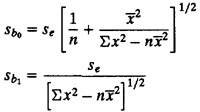
Here, se is the standard deviation of errors and  is the sample mean of x. The 100(1 – α)% confidence intervals for b0 and b1 can be be computed using t[1 – α/2;n – 2]— the 1 – α/2 quantile of a t variate with n – 2 degrees of freedom. The confidence intervals are
is the sample mean of x. The 100(1 – α)% confidence intervals for b0 and b1 can be be computed using t[1 – α/2;n – 2]— the 1 – α/2 quantile of a t variate with n – 2 degrees of freedom. The confidence intervals are
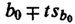
and
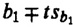
If a confidence interval includes zero, then the regression parameter cannot be considered different from zero at the 100(1–α)% confidence level.
| Previous | Table of Contents | Next |